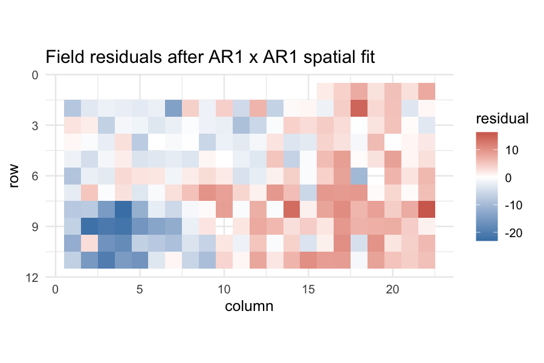

Tutorial 09: Spatio-temporal models: AR1, spatial, temporal
2026-06-06
Source:vignettes/flexyBayes-09-spatio-temporal.Rmd
flexyBayes-09-spatio-temporal.Rmd1. Why spatio-temporal models?
This is a syntax-and-representation catalogue. It demonstrates how to write models across the term surface. The fits use small sampling budgets so the document builds quickly, and several printed diagnostics therefore do not meet the package’s own convergence thresholds (, ESS ); some model classes also mix poorly on their backend at any budget. Read the posterior summaries here as illustrations of the output shape, not as inferential results. For a convergence-clean worked fit and the trustworthy-fit workflow, see the getting started and cross-engine triangulation vignettes.
Two classes of correlation are nearly universal in applied data and nearly always ignored:
- Spatial correlation. Field trials, geostatistical surveys, remote-sensing measurements: nearby observations are more similar than distant ones, even after accounting for treatment effects.
- Temporal correlation. Repeated measurements on the same experimental unit: today’s reading carries information about tomorrow’s, even after accounting for time trend.
Ignoring either kind of correlation has the same effect: standard errors are biased downward, posterior credible intervals are too narrow, and inferences look more confident than the data warrant.
flexyBayes covers two correlation structures:
-
first-order autoregressive (
ar1) on a regular ordered factor — for time, columns, or rows; -
separable two-dimensional autoregressive
(
ar1(row):ar1(col)) on a regular field grid — the workhorse of agricultural field- trial analysis (Gilmour, Cullis, & Verbyla, 1997).
INLA’s spatial machinery — Besag-York-Mollié 2 (BYM2) for areal data, the stochastic partial differential equation (SPDE) approach for irregular geography, and the Hilbert-space approximate Gaussian process (HSGP) for fast continuous-domain approximations — substantially more powerful for irregular geographies — is on the roadmap.
2. The spatial AR1×AR1 model: stroup.nin
agridat::stroup.nin is the canonical Nebraska wheat
trial (Stroup, 2002): 56 genotypes laid out in a 22-row × 11-column
field with some missing yields, replicated three times. The classic
mixed-model analysis is:
with replicate effects, random genotype effects, and residuals that are correlated in space — separable autoregressive on row and column.
A note on the fits below — read first. The spatial AR1×AR1 and the temporal AR1 models here are structured-covariance models – the hardest case for Hamiltonian Monte Carlo, and greta-only (INLA refuses the AR1×AR1 route). At the modest MCMC budgets used to keep the vignette fast, these fits frequently fail to mix (large , near-zero ESS). Treat this vignette as a guide to specifying spatial and temporal correlation structures, not as a demonstration of inference; for a real analysis raise the budget substantially and verify convergence as the getting started vignette describes before interpreting anything.
library(flexyBayes)
data(stroup.nin, package = "agridat")
sn <- stroup.nin[!is.na(stroup.nin$yield) & !is.na(stroup.nin$rep), ]
sn$row <- factor(sn$row)
sn$col <- factor(sn$col)
str(sn)
#> 'data.frame': 224 obs. of 5 variables:
#> $ gen : Factor w/ 56 levels "Arapahoe","Brule",..: 12 2 50 7 1 14 15 16 4 52 ...
#> $ rep : Factor w/ 4 levels "R1","R2","R3",..: 1 1 1 1 1 1 1 1 1 1 ...
#> $ yield: num 29.2 31.6 35 30.1 33 ...
#> $ col : Factor w/ 22 levels "1","2","3","4",..: 16 17 18 19 20 21 22 1 2 3 ...
#> $ row : Factor w/ 11 levels "1","2","3","4",..: 1 1 1 1 1 1 1 2 2 2 ...
fit_spatial <- flexybayes(
fixed = yield ~ 1 + rep,
random = ~ gen,
rcov = ~ ar1(row):ar1(col),
data = sn,
n_samples = mcmc_small$n_samples,
warmup = mcmc_small$warmup,
chains = mcmc_small$chains,
verbose = FALSE
)
fit_spatial
#> Bayesian mixed model [flexyBayes]
#> -------------------------------------------------------
#> Fixed : yield ~ 1 + rep
#> Random : ~gen
#> Rcov : ~ar1(row):ar1(col)
#> Family : gaussian ( identity link )
#> MCMC : 2 chain(s) x 1000 samples (warmup = 2000 ) -- 17.7 sec
#> Params : 4 monitored; 2 fixed, 1 random terms
#> Representation: exact
#> Engine: greta MCMC
#> Max Rhat: 1.539 [!]
#> Min ESS: 11
#> -------------------------------------------------------
#> $glm -- GLM-compatible (summary, emmeans, etc.)
#> $greta -- native greta (draws, model, calculate)
#> $extras -- diagnostics, BLUPs, variance componentsThe variance-component block reports the genotype variance and the two AR1 correlation parameters — one for rows, one for columns — plus the residual standard deviation. AR1 correlations near 1 indicate strong spatial autocorrelation; values near 0 indicate the independence model is approximately correct.
A common diagnostic is the plot of the field-trial residuals: if spatial correlation has been adequately accounted for, the residuals are visually unstructured.
sn$resid <- residuals(fit_spatial, type = "response")
library(ggplot2)
ggplot(sn, aes(x = as.numeric(col), y = as.numeric(row), fill = resid)) +
geom_tile() +
scale_fill_gradient2(low = "steelblue", mid = "white", high = "firebrick",
midpoint = 0) +
scale_y_reverse() +
coord_fixed() +
theme_minimal(base_size = 12) +
labs(x = "column", y = "row", fill = "residual",
title = "Field residuals after AR1 x AR1 spatial fit")
A patchy field — large red and blue regions — indicates remaining
spatial structure that the AR1×AR1 has not captured. The natural
extensions are an additional global spatial trend (e.g.,
pol(row, 2) + pol(col, 2) in random) or a more
flexible spatial covariance.
3. Temporal correlation: longitudinal recast of
sleepstudy
The sleepstudy data are inherently longitudinal — ten
consecutive days of measurement on each subject. The hierarchical-models
vignette analysed it with a random subject intercept; here we add an AR1
correlation on the residuals to acknowledge that within-subject errors
on adjacent days are likely correlated.
data(sleepstudy, package = "lme4")
sleepstudy$Days_f <- factor(sleepstudy$Days, levels = 0:9)
str(sleepstudy)
#> 'data.frame': 180 obs. of 4 variables:
#> $ Reaction: num 250 259 251 321 357 ...
#> $ Days : num 0 1 2 3 4 5 6 7 8 9 ...
#> $ Subject : Factor w/ 18 levels "308","309","310",..: 1 1 1 1 1 1 1 1 1 1 ...
#> $ Days_f : Factor w/ 10 levels "0","1","2","3",..: 1 2 3 4 5 6 7 8 9 10 ...
fit_temporal <- flexybayes(
fixed = Reaction ~ Days,
random = ~ Subject,
rcov = ~ ar1(Days_f):Subject,
data = sleepstudy,
n_samples = mcmc_small$n_samples,
warmup = mcmc_small$warmup,
chains = mcmc_small$chains,
verbose = FALSE
)
fit_temporal
#> Bayesian mixed model [flexyBayes]
#> -------------------------------------------------------
#> Fixed : Reaction ~ Days
#> Random : ~Subject
#> Rcov : ~ar1(Days_f):Subject
#> Family : gaussian ( identity link )
#> MCMC : 2 chain(s) x 1000 samples (warmup = 2000 ) -- 9.8 sec
#> Params : 4 monitored; 2 fixed, 1 random terms
#> Representation: exact
#> Engine: greta MCMC
#> Max Rhat: 1.436 [!]
#> Min ESS: 38
#> -------------------------------------------------------
#> $glm -- GLM-compatible (summary, emmeans, etc.)
#> $greta -- native greta (draws, model, calculate)
#> $extras -- diagnostics, BLUPs, variance componentsThe new variance component is the AR1 correlation parameter: the correlation between residuals one day apart. A correlation near zero means the random-intercept model has already absorbed most of the within-subject dependence; a correlation near one means the dependence is strong and the random-intercept fit was understating uncertainty.
4. Spatial trend in addition to AR1
Field trials often display both small-scale spatial correlation (captured by AR1×AR1) and large-scale spatial trend (a slowly varying gradient across the field). The two are layered:
flexybayes(
fixed = yield ~ rep,
random = ~ gen + spl(row) + spl(col), # global smooth trend
rcov = ~ ar1(row):ar1(col), # local spatial AR1
data = ...
)The penalised splines on row and column capture global gradient; the AR1×AR1 captures local short-range correlation. This composite is the agronomy-textbook decomposition (Gilmour, Cullis, & Verbyla, 1997).
5. Limitations of the current spatial coverage
flexyBayes covers regular grids with AR1 correlation. It
does not cover:
- irregular geography — the SPDE / Matérn approach (Lindgren, Rue, & Lindström, 2011) is on the roadmap;
-
areal data — the BYM2 model (Riebler, Sørbye,
Simpson, & Rue,
- is on the roadmap;
- continuous-time temporal correlation — the Ornstein–Uhlenbeck and continuous-AR processes are on the roadmap;
- spatio-temporal interaction — separable space-time covariance is on the roadmap.
For these models in the current release, route directly through
R-INLA or mgcv::gam(s = bs = "re") with the
relevant spatial basis. The backend internals vignette
describes how a third-party fit can plug into triangulate()
via the fb_as_draws_simple interface.
6. Pitfalls
Row and column must be factors.
flexyBayes reads ar1(row) as “AR1 correlation
on the levels of row in their factor order”. Numeric
row is coerced; if your row labels are not in field-order
when factor-coerced, the AR1 correlation will be wrong. Set the factor
levels explicitly:
factor(row, levels = sort(unique(row))).
The residual AR1 is not a substitute for design. A poorly- designed trial cannot be rescued by spatial-error modelling. A randomised block design is still essential; the AR1 captures what remains after design accounts for the planned variation.
Identifiability with too few rows or columns. A 4-row × 3-column field with 12 plots cannot identify both an AR1 correlation and a random-effect variance component — the data have insufficient degrees of freedom. Convergence diagnostics will flag this; refit without the AR1 and accept the simpler model.
INLA refuses AR1×AR1. The lgm_gate()
filter refuses spatial-AR1 dispatch to INLA via the
structured-covariance route, and the greta backend handles it natively.
If you need the INLA approximation for a separable AR1 structure, route
directly through R-INLA with
f(row, model = "ar1") plus group indices (see the
limitations above).
7. Active prompts
- Refit
stroup.ninwithrcov = ~ units(no spatial structure). How much does the genotype-level posterior change? How much does change? - Add a spatial trend to the AR1×AR1 fit:
random = ~ gen + spl(as.numeric(row)) + spl(as.numeric(col)). What happens to the AR1 correlation parameters? - Refit
sleepstudywith both random-subject-slope (asreml form:~ Subject + Subject:Days) and the AR1 on residuals. Which partition of variance dominates?
8. Session information
sessionInfo()
#> R version 4.5.2 (2025-10-31)
#> Platform: aarch64-apple-darwin20
#> Running under: macOS Tahoe 26.5.1
#>
#> Matrix products: default
#> BLAS: /System/Library/Frameworks/Accelerate.framework/Versions/A/Frameworks/vecLib.framework/Versions/A/libBLAS.dylib
#> LAPACK: /Library/Frameworks/R.framework/Versions/4.5-arm64/Resources/lib/libRlapack.dylib; LAPACK version 3.12.1
#>
#> locale:
#> [1] en_AU.UTF-8/en_AU.UTF-8/en_AU.UTF-8/C/en_AU.UTF-8/en_AU.UTF-8
#>
#> time zone: Australia/Adelaide
#> tzcode source: internal
#>
#> attached base packages:
#> [1] stats graphics grDevices utils datasets methods base
#>
#> other attached packages:
#> [1] ggplot2_4.0.3 flexyBayes_0.8.3
#>
#> loaded via a namespace (and not attached):
#> [1] tidyselect_1.2.1 dplyr_1.2.1 farver_2.1.2
#> [4] tensorflow_2.20.0 loo_2.9.0 S7_0.2.2
#> [7] tensorA_0.36.2.1 INLA_25.10.19 TH.data_1.1-5
#> [10] digest_0.6.39 estimability_1.5.1 lifecycle_1.0.5
#> [13] gretaR_0.2.0 sf_1.1-0 survival_3.8-3
#> [16] agridat_1.26 processx_3.9.0 magrittr_2.0.5
#> [19] posterior_1.7.0 compiler_4.5.2 rlang_1.2.0
#> [22] progress_1.2.3 tools_4.5.2 data.table_1.18.2.1
#> [25] knitr_1.51 labeling_0.4.3 prettyunits_1.2.0
#> [28] bridgesampling_1.2-1 bit_4.6.0 classInt_0.4-11
#> [31] reticulate_1.45.0 RColorBrewer_1.1-3 multcomp_1.4-29
#> [34] abind_1.4-8 KernSmooth_2.23-26 withr_3.0.2
#> [37] grid_4.5.2 xtable_1.8-8 e1071_1.7-17
#> [40] future_1.70.0 globals_0.19.1 emmeans_2.0.2
#> [43] scales_1.4.0 MASS_7.3-65 dichromat_2.0-0.1
#> [46] cli_3.6.6 mvtnorm_1.3-6 crayon_1.5.3
#> [49] generics_0.1.4 RcppParallel_5.1.11-2 otel_0.2.0
#> [52] tfruns_1.5.4 DBI_1.3.0 proxy_0.4-29
#> [55] stringr_1.6.0 splines_4.5.2 bayesplot_1.15.0
#> [58] parallel_4.5.2 coro_1.1.0 matrixStats_1.5.0
#> [61] base64enc_0.1-6 marginaleffects_0.32.0 brms_2.23.0
#> [64] vctrs_0.7.3 Matrix_1.7-4 sandwich_3.1-1
#> [67] jsonlite_2.0.0 greta_0.5.1 callr_3.7.6
#> [70] hms_1.1.4 bit64_4.8.0 listenv_0.10.1
#> [73] units_1.0-1 glue_1.8.1 parallelly_1.47.0
#> [76] codetools_0.2-20 distributional_0.7.0 stringi_1.8.7
#> [79] gtable_0.3.6 tibble_3.3.1 pillar_1.11.1
#> [82] Brobdingnag_1.2-9 torch_0.17.0 R6_2.6.1
#> [85] fmesher_0.7.0 evaluate_1.0.5 lattice_0.22-7
#> [88] png_0.1-9 backports_1.5.1 tfautograph_0.3.2
#> [91] rstantools_2.6.0 class_7.3-23 Rcpp_1.1.1-1.1
#> [94] checkmate_2.3.4 coda_0.19-4.1 nlme_3.1-168
#> [97] whisker_0.4.1 xfun_0.57 zoo_1.8-15
#> [100] pkgconfig_2.0.3References
Cullis, B. R., Smith, A. B., & Coombes, N. E. (2006). On the design of early generation variety trials with correlated data. Journal of Agricultural, Biological, and Environmental Statistics, 11(4), 381–393.
Gilmour, A. R., Cullis, B. R., & Verbyla, A. P. (1997). Accounting for natural and extraneous variation in the analysis of field experiments. Journal of Agricultural, Biological, and Environmental Statistics, 2(3), 269–293.
Lindgren, F., Rue, H., & Lindström, J. (2011). An explicit link between Gaussian fields and Gaussian Markov random fields: The stochastic partial differential equation approach. Journal of the Royal Statistical Society: Series B, 73(4), 423–498.
Riebler, A., Sørbye, S. H., Simpson, D., & Rue, H. (2016). An intuitive Bayesian spatial model for disease mapping that accounts for scaling. Statistical Methods in Medical Research, 25(4), 1145–1165.
Stroup, W. W. (2002). Power analysis based on spatial effects mixed models: A tool for comparing design and analysis strategies in the presence of spatial variability. Journal of Agricultural, Biological, and Environmental Statistics, 7(4), 491–511.